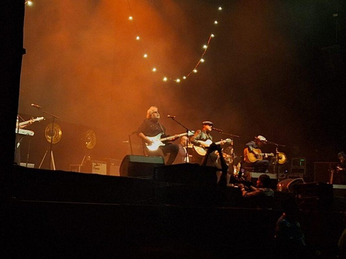
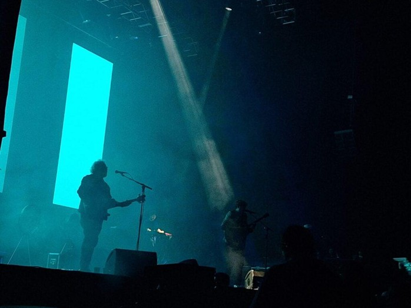
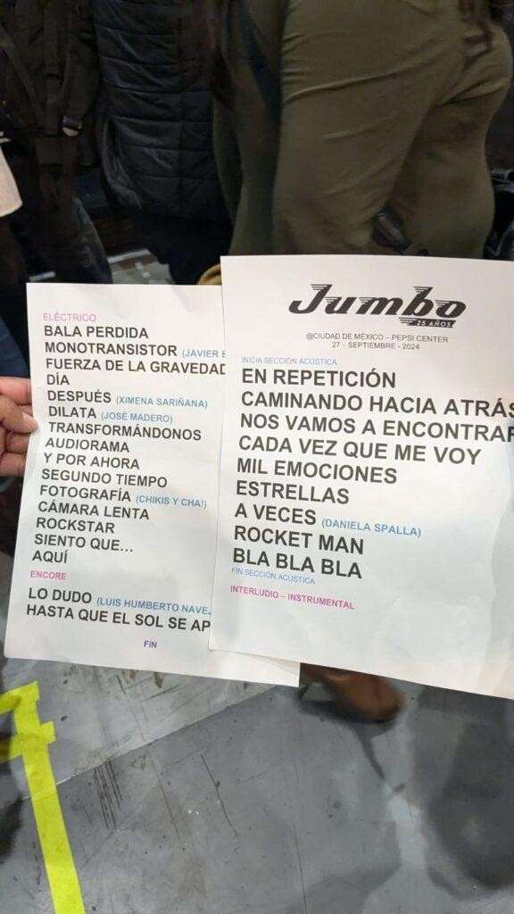

Jumbo cerró en el Pepsi Center una extensa gira por México y EUA celebrando sus 25 años de carrera. Agotando entradas pocas horas antes del inicio, la banda regia demostró que sus fans siguen siendo parte vital del "Planeta Jumbo".
ACTO I: EL DESPERTAR ACÚSTICO
El show inició en un formato íntimo, recreando la atmósfera de una terraza. Acompañados de un ensamble de cuerdas y metales, sonaron joyas como “En repetición”, “Nos vamos a encontrar” y “Cada vez que me voy”.

ACTO II: EL SEGMENTO ELÉCTRICO
Tras despedir al ensamble, los regios regresaron con toda la potencia eléctrica. El escenario se encendió con clásicos y una lista de invitados que marcaron la historia del rock nacional.


El clímax llegó con “Fotografía”, contando con las colaboraciones de Jay de la Cueva y Cha!. La atmósfera mágica dio paso a los himnos finales: “Cámara Lenta”, “Rockstar”, “Siento” y el cierre definitivo con “Aquí”.

Jumbo nos regaló una noche épica que hizo honor a un viaje de nostalgia iniciado en 1999. Larga vida a Jumbo y a sus canciones que seguirán sonando en nuestra memoria.